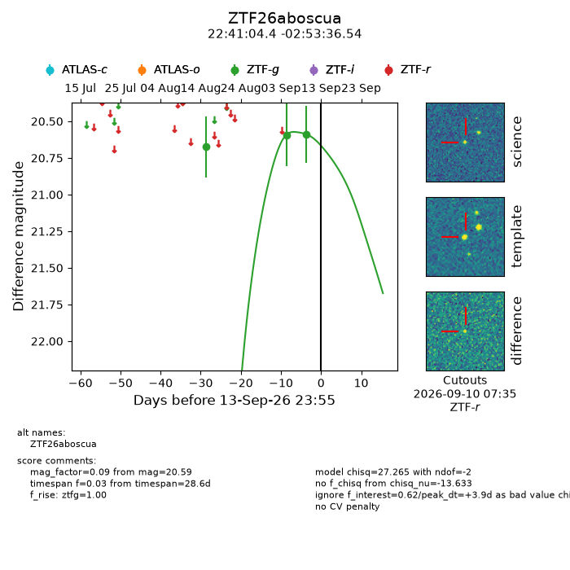
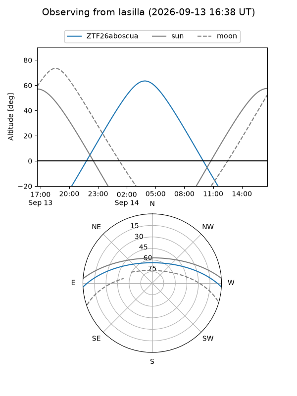
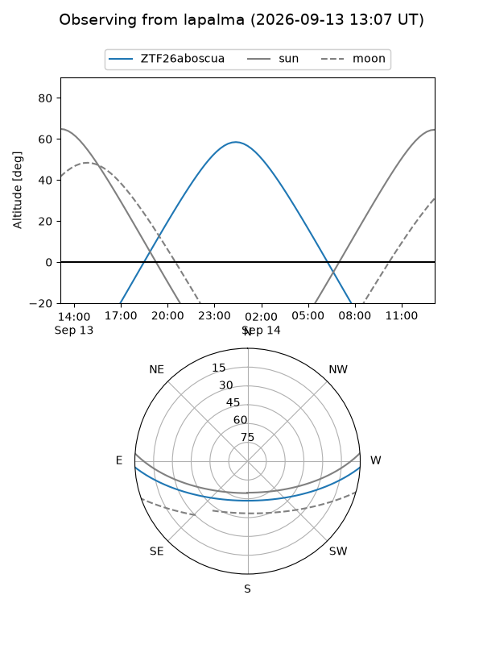
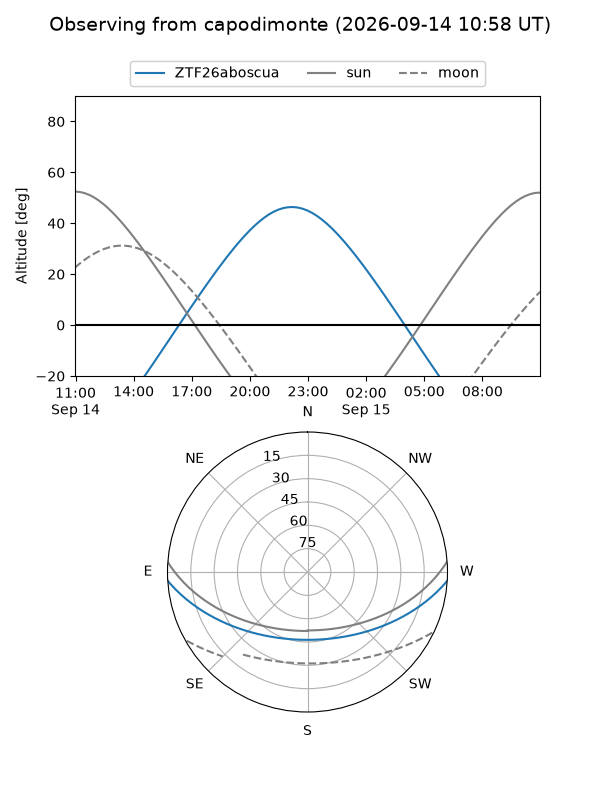
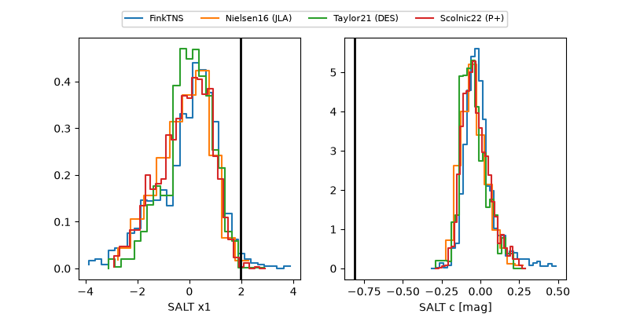

ZTF26aboscua
Target ZTF26aboscua at 2026-09-14 11:42
Aliases and brokers:
FINK-ZTF: ztf.fink-portal.org/ZTF26aboscua
Lasair-ZTF: lasair-ztf.lsst.ac.uk/objects/ZTF26aboscua
ALeRCE-ZTF: alerce.online/object/ZTF26aboscua
Direct TNS query: direct search
alt names
ZTF26aboscua (ztf,fink_ztf)
Coordinates:
equatorial (ra, dec) = 340.2683,-2.89348
equatorial (HMS+DMS) = 22:41:04.38,-02:53:36.54
galactic (l, b) = (65.1318,-50.52553)
Flags:
peak dt: +4.4
Photometry:
last ztfg=20.59
3 ztfg detections
Lightcurve

Visibility



Additional plots
